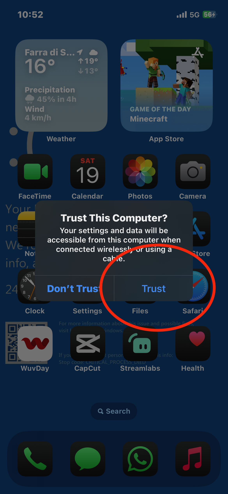

macOS is the best os for palera1n, first open Terminal and copy the below command:
sudo /bin/sh -c "$(curl -fsSL https://static.palera.in/scripts/install.sh)"
Now simply plug-in your iDevice
Note: USB-C cables can create issues when injecting palera1n payloads. Use USB-A cable.
Make sure that you have trusted your mac
Now you have to run palera1n and arguments, see here the list of commands and arguments to use or use my Palera1n GUI